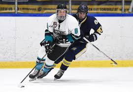
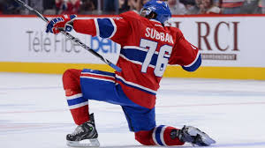
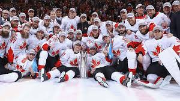
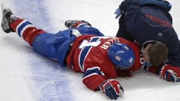

It’s packed with action
Unlike other sports like golf and soccer, hockey is a fast paced sport, I find it so greatly boring when sports are slow it’s like these guys are getting paid just to walk around and they don't even look like real athletes. Hockey just never gets old because you're never out of the game. For example you could be down 3 goals with 5 minutes left. But if you score 1 goal quickly, the adrenaline starts pumping and then it's anybody's game. Futhermore you can change players on the fly. There's no need for a 5 minute stoppage in play just to sub out players adding even more pace and excitement to the game.
There’s something for everyone
No matter if you're a boy or a girl, old or young there will be something you like about hockey. Whether it’s the clutch cool or the dirty breakaway move or nailing somebody. Hockey is also very diverse and there is almost somebody in the NHL from almost everywhere in the world and people of all religion and colour are allowed to play.How cool is it to have such a high-intensity sport like hockey played all other major sports are played on ground. It is nice to change up the turf and spice it up a little bit,in addition I believe it also adds some excitement,intensity and raises the stakes when it's played on ice.
It’s a team sport
Hockey is a team sport and makes you trust your teammates when everything is on the line. It helps you bond and meet plenty of great people making friendships that will last a lifetime. It’s also a ton of fun especially when you win and even if you lose. It helps you develop essential life skills such as perseverance and co-operation. If even only 1 person on the team doesn't do their job correctly it can easily end up as a lost game. But I promise you that there is no feeling in the whole world that is better than getting that win.
Hockey players are warriors
Hockey players are absolute brutes. They will grit out their pain till the end of the game, and not complain 1 bit. Unlike in basketball or soccer hockey players dont flop to the ground they have people getting hit in the face with vulcanized rubber going 100mph and they will stitch it up and be right back like nothing even happened. People will break bones and still finish the shift for the team. These players are so dedicated to doing what's best for the team its little crazy. Once a hockey player(Rich Peverly)died on the ice for a few seconds but still wanted to finish the game, while basketball players sit out over fingernail injuries.
Highest payed players as of 2019
| First Name | Last Name | $(in million per year) |
|---|---|---|
| Connor | Mcdavid | 12.5 |
| Artemi | Panarin | 11.64 |
| Auston | Matthews | 11.63 |
| Erik | Karlsson | 11.5 |
| Drew | Doughty | 11 |
| John | Tavares | 11 |
| Mitchell | Marner | 10.89 |
| Carey | Price | 10.5 |
| Johnathan | Toews | 10.5 |
| Patrick | Kane | 10.5 |
HTML and CSS Validated